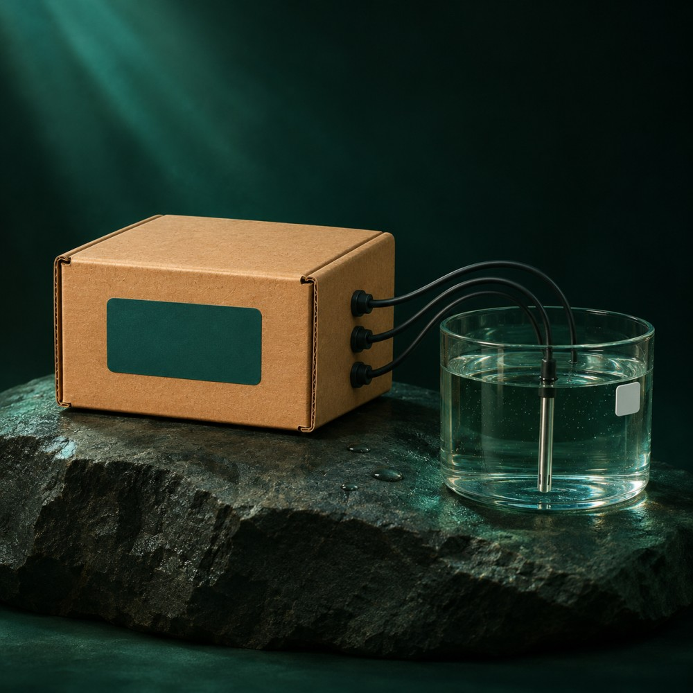

Prototipo
Tricorder Agua
Temperatura en °C, señales crudas de pH y turbidez, identificación RFID, fecha y exportación CSV por Wi-Fi local.
Estación portátil de auditoría
Registra temperatura, pH y turbidez en campo. Vincula cada lectura con su recipiente mediante RFID y entrega al laboratorio un historial listo para consultar.

Flujo de muestreo
Un ESP32-S3, tres sensores y un lector RFID en una estación portátil con carcasa de cartón.
Acerca el lector al sticker RFID del tanque o punto de muestreo. La estación usa el identificador de la etiqueta para asociar las lecturas.
El reloj DS1307 marca la hora. El equipo indica si las señales de pH y turbidez se estabilizaron durante la captura.
Descarga el CSV desde el Wi-Fi del equipo. Ábrelo en el panel web o comparte una copia publicada con tu equipo de laboratorio.
Panel de auditoría
Filtra por identificador RFID y descarga las filas visibles en el formato original del equipo.
Datos de demostración
| Fecha y hora (RTC) | RFID | Temp. (°C) | pH (ADC) | Turbidez (ADC) | pH estable | Turb. estable |
|---|
pH y turbidez se registran en cuentas ADC (0–4095). Su conversión a unidades de pH o NTU requiere calibración.
Conéctate a Tricorder-Agua y descarga muestras.csv desde su panel local. Vuelve a este panel y selecciona Importar CSV. El archivo se procesa en tu navegador.
Comparativa
Tricorder Agua es una opción para levantamientos piloto que necesitan reunir tres señales y seguir cada recipiente desde la toma hasta el archivo.
Prototipo
Temperatura en °C, señales crudas de pH y turbidez, identificación RFID, fecha y exportación CSV por Wi-Fi local.
Analizador de bolsillo
Combina pH, conductividad, sólidos disueltos y temperatura. Su formato compacto favorece mediciones puntuales.
Ficha de Hanna InstrumentsTurbidímetro portátil
Equipo especializado para turbidez en NTU, con registro de hasta 500 resultados y transferencia con el módulo USB.
Ficha de HachLa comparación se centra en el flujo de trabajo. Tricorder Agua es un prototipo para monitoreo exploratorio.